Provenance — l'outil complet & son workflow
Application locale de vigilance LCB-FT (lutte contre le blanchiment et le financement du terrorisme) pour le marché de l'art. Elle structure la due diligence d'un acteur, d'une œuvre ou d'une transaction — sans jamais se substituer au jugement du professionnel assujetti, ni prétendre authentifier une œuvre.
01Vue d'ensemble & positionnement
Provenance est un assistant de conformité destiné aux marchands d'art, galeries et
intermédiaires — assujettis LCB-FT au titre de l'article L.561-2, 10° du Code monétaire et
financier. L'outil poursuit trois objectifs :
Documenter
Consigner l'identité des parties, la chaîne de provenance, les vérifications de registres — de façon horodatée et tamper-evident.
Interroger de vraies sources
Screening sanctions/PPE via un fournisseur réel, liens vers les registres officiels de vol/spoliation, comparables de marché.
Structurer la décision
Score de risque explicable, pièces à collecter justifiées, projets de gel/déclaration — l'humain tranche.
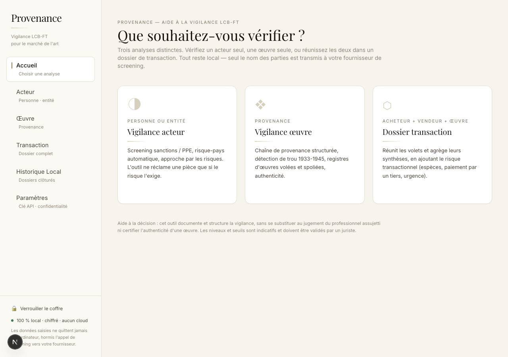
02Contraintes transversales
Ces contraintes gouvernent tout le produit et priment sur les fonctionnalités.
Tout-local, zéro cloud
Aucun compte, aucune télémétrie. Les seules sorties réseau sont le nom des parties
(vers le fournisseur de screening), le nom de l'artiste (vers le fournisseur de marché, si activé) et —
nouveau si l'horodatage qualifié est activé (désactivé par défaut) — la seule
empreinte SHA-256 irréversible d'un dossier, avec les clés API du galeriste. Pièces d'identité et photos
d'œuvre restent des data-URL jamais transmises.
Sécurité au repos renforcé
Coffre AES-GCM 256 bits en chiffrement par enveloppe : une clé de données chiffre le contenu ; elle est protégée par la phrase secrète dérivée en Argon2id (memory-hard, bien plus résistant au force-brute GPU que PBKDF2) et par une clé de récupération. La phrase n'est jamais stockée ; le verrouillage automatique après inactivité purge la clé de la mémoire. Une phrase oubliée ne perd plus tout (clé de récupération), et changer de phrase ne re-chiffre pas les dossiers. Détail en partie 18.
Revue humaine obligatoire & responsabilité pénale
Toute synthèse porte l'invariant revueHumaineRequise: true. L'archivage d'un dossier est
bloqué tant qu'une décision humaine datée et signée n'a pas été prise. Les barèmes et seuils sont
« indicatifs, à valider par un juriste ». nouveau Un rappel explicite — à la clôture
et dans le rapport PDF — précise que l'assujetti reste personnellement et pénalement
responsable ; l'outil assiste, il n'exonère pas.
Piste d'audit inviolable (détectable)
Chaque événement est chaîné par hash SHA-256 au précédent : toute altération est détectable
(verifyTrail). L'intégrité locale n'est pas un horodatage légal opposable — pour cela, un
horodatage qualifié RFC 3161 est désormais disponible nouveau
en option, désactivée par défaut (voir partie 17).
Minimisation RGPD
Approche par les risques : capture minimale, pièces réclamées seulement si le risque l'exige, avec motif tracé. Conservation locale chiffrée, effaçable ; rétention 5 ans possible via export chiffré.
Obligations distinctes, jamais confondues
Le gel des avoirs (DG Trésor, « sans délai », art. L.562-4) et la déclaration de soupçon (Tracfin, via ERMES, jamais par e-mail) sont deux obligations séparées. L'outil prépare des projets et n'envoie rien.
03Architecture & stack technique
Couches
- src/lib/ — cœur métier pur (scoring, crypto, coffre, screening, registres, audit…), testable sans UI.
- src/components/ — UI React (
"use client"), présentation + orchestration locale. - src/app/ — pages (App Router) + routes API (
/api/screening,/api/market).
Stack
- Next.js 16.2.9, React / React-DOM 19.2.4 (App Router).
- @react-pdf/renderer 4.5 — génération PDF locale.
- Tailwind CSS v4, TypeScript 5, ESLint 9.
- Vitest (unitaires) · Playwright (E2E Chromium).
- WebCrypto (
crypto.subtle) · persistance IndexedDB (repli localStorage).
04Le coffre chiffré — porte d'entrée obligatoire
Rien de l'application n'est rendu tant que le coffre n'est pas déverrouillé. Le composant VaultGate
décide au montage entre plusieurs modes : création,
migration, déverrouillage,
récupération (phrase oubliée → clé de récupération) et
prêt.
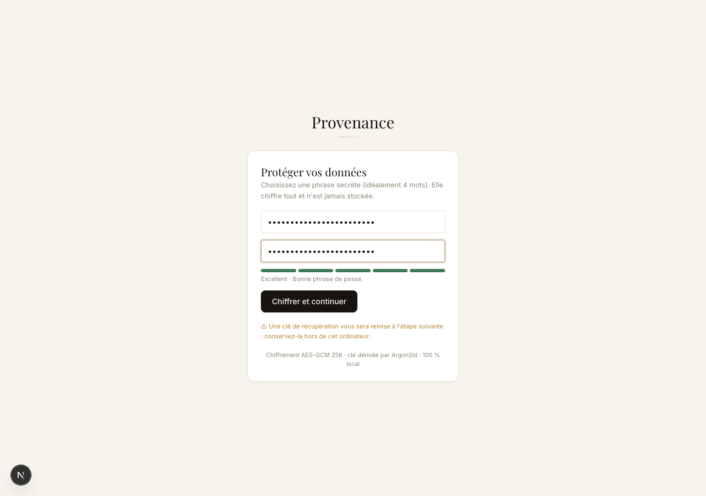
Chiffrement par enveloppe (v2)
Une clé de données
(DK) aléatoire chiffre l'ensemble {settings, history, drafts} (dossiers, décisions, pièces, clés API).
La DK est emballée deux fois : sous la phrase (Argon2id) et sous la clé de
récupération. Blob v2 {v, kdf, params, saltPass, wrapPass, saltRecovery, wrapRecovery, sealed},
persisté sur IndexedDB. Les coffres v1 (PBKDF2) sont migrés au déverrouillage.
Récupération, changement, export
Phrase oubliée →
la clé de récupération rouvre le coffre puis on définit une nouvelle phrase. Changer de phrase
re-emballe la DK sans re-chiffrer le contenu (rapide). exportBlob() / importBlob() pour la
sauvegarde hors-machine (rétention 5 ans) ; quota dépassé → StorageFullError.
05Les trois modules de vigilance
Chaque module est autonome mais partage le même moteur de risque et la même boucle de clôture
(CompliancePanel : décision → gel/Tracfin éventuels → audit → PDF → archivage).
5.1 — Module Acteur personne · entité
Vigilance d'une partie (acheteur, vendeur, intermédiaire). Saisie minimale : la date de naissance et la nationalité ne servent qu'à désambiguïser le screening. Pour une entité, un éditeur récursif de bénéficiaires effectifs (UBO) permet de déclarer la cascade de détention ; chaque nœud est screené en profondeur.
- Signaux automatiques (sourcés, non demandés) : correspondance sanction / PPE / média négatif / erreur de screening, risque-pays dérivé du pays et de la nationalité.
- Case « transaction > seuil » : si cochée pour un acheteur, la pièce d'identité devient obligatoire et bloque la création du dossier tant qu'elle manque.
- OCR local assisté nouveau : une fois la pièce déposée, un bouton « Analyser la pièce » lit le document dans le navigateur (tesseract.js — l'image ne quitte jamais la machine) et propose des champs (nom, prénoms, naissance, nationalité ; ou raison sociale + SIREN pour une entité). Les champs sont éditables et ne s'appliquent qu'à votre validation — jamais d'autofill silencieux. étendu Pour une entité, l'OCR d'un Kbis / de statuts propose une cascade de bénéficiaires effectifs (nom, part) que vous contrôlez nœud par nœud avant tout screening.
- Filigranage local nouveau : un bouton incruste dans les pixels de la pièce (canvas, sur l'appareil) un filigrane « Due Diligence LCB-FT · galerie · date » — protection contre le détournement, sans rien transmettre. Une signature manuscrite peut être tracée à la clôture et jointe au PDF.
- Antécédents inter-dossiers nouveau : à la saisie du nom, l'outil signale un profil proche déjà évalué (recherche floue, tolérante aux fautes) et propose de le réimporter — il propose, ne fusionne jamais d'office. Les champs récurrents (nationalité, pays, forme juridique) sont auto-complétés depuis le coffre.
- Jauge de complétion nouveau : une barre indique en direct le pourcentage de dossier prêt et la prochaine étape (« Date de naissance », « Origine des fonds à documenter »…), calée sur le niveau de vigilance retenu.
- Couverture KYC nouveau : au-delà de l'identité, le dossier recueille l'objet & la nature de la relation d'affaires (art. L. 561-5-1 CMF), l'adresse complète, le mandant / bénéficiaire réel (si la partie agit pour un tiers) et l'origine des fonds (qui satisfait la pièce due en renforcée). Deux indices facultatifs couvrent la représentation opaque et l'entourage d'une PPE (RCA).
- Sortie : niveau de vigilance (tier), sous-scores explicables, pièces à collecter justifiées.
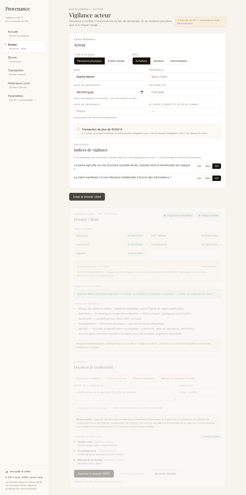
5.2 — Module Œuvre provenance
Due diligence de provenance. Aucune analyse d'image : la recherche d'image inversée est menée par l'humain (l'outil ouvre Google Lens / TinEye) ; seules les métadonnées EXIF du fichier sont lues. Six volets :
- Identité & preuves — catégorie (qui adapte la checklist), titre, artiste, année, marques au dos, photo.
- Chaîne de provenance — un maillon par détenteur, avec qualité de source graduée (aucune → mention → facture → catalogue → archive). Détection des ruptures > 30 ans, des incohérences (maillon antérieur à la création) et du trou 1933-1945. amélioré Les dates floues (« vers 1941 », « années 40 », « milieu du XXᵉ siècle », « XVIIᵉ siècle ») sont désormais interprétées de façon prudente pour ne pas rater ce trou.
- Registres — vol (Interpol ID-Art, Art Loss Register, FBI NSAF) et spoliation (Lost Art DB, MNR/Rose-Valland, ERR, Central Registry). Liens de recherche pré-remplis ; l'humain constate et consigne. nouveau Un compteur « X/N vérifiés » et un bouton d'ouverture groupée (« Ouvrir les N recherches à vérifier ») fluidifient le travail — sans jamais cocher « aucun match » à votre place. nouveau Une fois chaque registre constaté, une attestation de revue consigne dans la piste d'audit que vous avez consulté et constaté les résultats (reprise fidèle du constaté, registre par registre) — c'est la version honnête de la « case unique de conformité », sans interrogation automatique des bases ni score de similarité.
- Authenticité & titre — checklist adaptée (catalogue raisonné, certificat, litige, CITES, édition…).
- Cote de l'artiste — comparables de marché & cohérence de prix (optionnel).
- Indicateurs GAFI — 5 drapeaux du rapport GAFI 2023 (œuvre « fraîche au marché », réticence…).
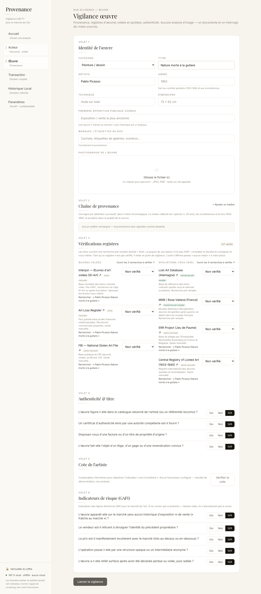
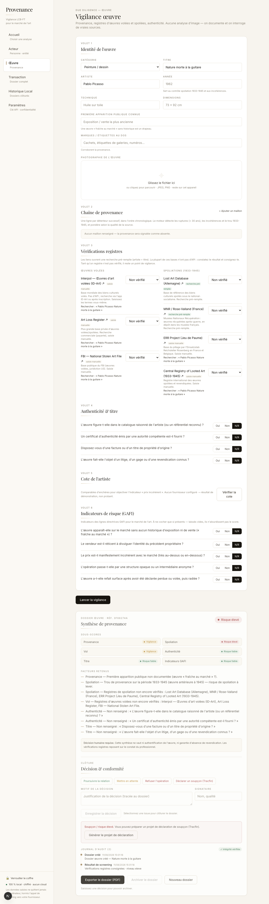
5.3 — Module Transaction dossier complet
Réunit acheteur + (vendeur) + œuvre et agrège leurs synthèses, en ajoutant le risque purement transactionnel (espèces/crypto, paiement par un tiers, urgence/discrétion). Le montant saisi alimente à la fois le seuil de vigilance et le verdict de cohérence de prix de l'œuvre.
nouveau Un sélecteur de nature d'opération détermine les parties réellement évaluées, et donc les pièces demandées et le contenu du rapport :
Vente
Galerie → acheteur. Seuls l'acheteur et l'œuvre sont évalués.
Achat
Vendeur → galerie. Seuls le vendeur et l'œuvre sont évalués.
Intermédiation
Vendeur → acheteur. Les deux parties + l'œuvre sont évaluées.
En vente/achat, la galerie est sa propre contrepartie et n'est pas screenée. L'agrégation prend le pire des sous-scores parmi les parties présentes, sans pénalité pour une partie absente.
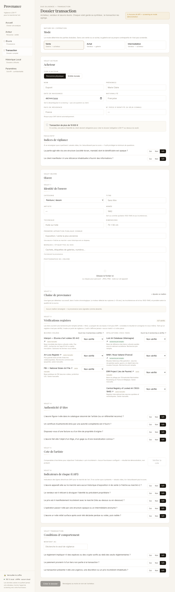
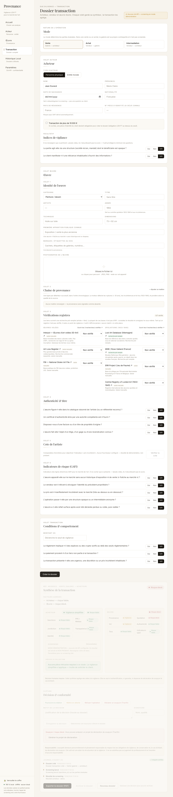
06Le moteur de risque — barème détaillé
Le moteur est transparent et explicable : chaque point est justifié par un facteur listé en clair. La conversion points → niveau est commune à tout l'outil.
bareme.test.ts) pour éviter toute dérive silencieuse doc↔code.6.0 — Conversion points → niveau
| Condition | Niveau | Base |
|---|---|---|
| points ≥ 6 | Risque élevé | choix éditeur |
| points ≥ 3 | Vigilance | choix éditeur |
| sinon | Faible | choix éditeur |
6.1 — Sous-scores Acteur
| Facteur | Points | Effet |
|---|---|---|
| Correspondance sanction | +100 | Force le niveau élevé (blocage à confirmer) |
| Personne politiquement exposée (PPE) | +4 | Déclenche à lui seul la vigilance renforcée |
| Média négatif (adverse media) | +2 | — |
| Screening en erreur | +2 | Jamais un faux « clear » |
| Juridiction liste noire GAFI | +5 | Vigilance renforcée |
| Juridiction liste grise GAFI | +3 | Standard (renforcée si montant ≥ seuil) |
| Entité sans bénéficiaire effectif déclaré | +3 | Opacité |
| Chaîne UBO incomplète (cascade opaque) | +3 | Opacité |
| Indice d'opacité signalé par le galeriste | +3 | Opacité |
| Données d'identification incomplètes | +1 | — |
6.2 — Niveau de vigilance (tier) & pièces réclamées
Déclenchement
- Renforcée si : sanction ou PPE ou liste noire ou (liste grise et montant ≥ seuil) ou (montant ≥ seuil et opacité).
- Standard si : montant ≥ seuil ou liste grise ou média ou opacité ou erreur.
- Simplifiée sinon.
Pièces à collecter
- Simplifiée → aucune pièce intrusive.
- Standard → pièce d'identité / Kbis.
- Renforcée → + origine des fonds (+ documentation UBO si entité).
6.4 — Sous-scores Œuvre
| Facteur | Points |
|---|---|
| Aucune provenance | +3 |
| Provenance d'un seul maillon | +2 |
| Maillon à source faible/absente (par maillon) | +1 |
| Rupture > 30 ans entre maillons | +2 |
| Maillon antérieur à la création (incohérence) | +3 |
| Première apparition publique non documentée | +1 |
| Correspondance registre spoliation | +100 |
| Trou de provenance 1933-1945 (œuvre ≤ 1945) | +4 |
| Correspondance registre vol | +100 |
| Registre non vérifié (par registre) | +1 |
| Question authenticité/titre non renseignée | +1 |
| Question authenticité/titre — drapeau levé | +1 à +3 |
6.5 & 6.6 — Indicateurs GAFI & comportement transactionnel
Indicateurs GAFI (œuvre)
| Œuvre « fraîche au marché » | 2 |
| Réticence à divulguer le précédent propriétaire | 3 |
| Prix manifestement incohérent | 2 |
| Structure opaque / intermédiaire anonyme | 3 |
| Œuvre réapparue après perte/vol puis radiation | 3 |
Comportement (transaction)
| Espèces / crypto au-delà des seuils | 3 |
| Paiement par un tiers non partie | 3 |
| Urgence / discrétion / prix incohérent | 2 |
Agrégation : niveau = pire des volets ; le comportement peut monter (≥ 6 → élevé ; ≥ 3 → au moins vigilance), jamais baisser.
07Référentiel GAFI & garde-fou de péremption
Le risque-pays est dérivé du texte saisi (tolérant aux accents, à la casse, aux variantes) plutôt que demandé au galeriste — une question intrusive de moins. Le référentiel est un snapshot figé dans le code.
Listes (plénière du 19 juin 2026)
Liste noire (appel à l'action) : Corée du Nord, Iran, Myanmar.
Liste grise (surveillance renforcée) : 22 juridictions dont Monaco, Bulgarie, Venezuela,
Bolivie, Koweït, Irak, Bosnie-Herzégovine, Îles Vierges britanniques…
Garde-fou isGafiSnapshotStale
Le GAFI révise ses listes ~3×/an (février / juin / octobre). Au-delà de 8 mois (≈ 2 plénières), la page Paramètres affiche un bandeau rouge de péremption. La mise à jour reste manuelle dans le code — le garde-fou alerte, il ne corrige pas seul.
gafi-reminder.yml) réutilise isGafiSnapshotStale
et, si le snapshot est périmé, ouvre une issue de rappel (anti-doublon) décrivant la procédure de
mise à jour. Choix assumé : l'outil n'écrit jamais de liste juridique automatiquement (le site du
GAFI bloque les bots, et une liste non vérifiée serait dangereuse) — il alerte, un humain met à jour et ouvre une PR.08Screening des sanctions & gestion des faux positifs
Deux voies au choix : un appariement local sur listes officielles (recommandé — gratuit,
hors-ligne, aucune donnée ne sort) ou un fournisseur réseau via la route
POST /api/screening, qui ne conserve aucune donnée.
listes_officielles apparie les noms en local (matcher flou, réutilise
similarity), sans réseau. On possède ainsi la partie sanctions/gels au lieu de la louer.
Honnêteté : un snapshot « graine » (démonstration, incomplet) ne renvoie jamais
un « clear » probant — un non-match y est explicitement non probant ; seul un snapshot officiel
complet produit un « clear » opposable. Un garde-fou de fraîcheur alerte quand le snapshot vieillit.
PPE & adverse media (payants, difficiles) restent un enrichissement optionnel via un fournisseur réseau.| Statut | Signification |
|---|---|
| sanction | Correspondance sur une liste de gel/sanctions → obligation potentielle de gel |
| ppe | Personne politiquement exposée |
| media | Présence en médias négatifs (adverse media) |
| clear | Aucune correspondance sur les listes interrogées |
| error | Appel impossible — jamais transformé en faux « clear » |
| demo | Sans clé API ou snapshot graine incomplet : résultat explicitement NON probant |
Fournisseurs
Listes officielles (local, gratuit)
pour sanctions/gels ; Sanctions.io (min_score 0.85, désambiguïsation
date/nationalité) et OpenSanctions (schéma Person/Organization, topics → Sanction/PEP) pour
l'enrichissement PPE/média. Un connecteur custom compatible est prévu.
Faux positifs tracés
Un match homonyme peut être
écarté avec justification : il reste visible (barré) mais sort du calcul, et l'action est
journalisée (match_ecarte). Le recalcul du statut effectif est partagé entre la route et le client
(classifyMatches).
collectBeneficiarySubjects aplatit récursivement l'arbre des bénéficiaires : chaque
personne et chaque entité intermédiaire est screenée, en profondeur.09Obligations aval : pièces, gel, déclaration, rapport
📄 Demande de pièces
buildRequestLetter génère un
courrier neutre, justifié par l'obligation LCB-FT (mailto / copie / .txt). Évite l'interrogatoire oral.
Le galeriste l'envoie lui-même.
❄️ Gel des avoirs
Sur correspondance sanction,
buildFreezeNotice prépare un projet de notification DG Trésor, rappelant le gel « sans délai »
(L.562-4) et l'obligation de confirmer dans le registre national. L'outil n'envoie rien.
🕵️ Déclaration de soupçon
buildTracfinDraft
génère un projet de DS structuré à partir des facteurs retenus, en rappelant qu'une DS ne se transmet
jamais par e-mail mais via ERMES.
🖨️ Rapport PDF
downloadReport produit un PDF
local (@react-pdf/renderer) par type de dossier. Formulations honnêtes imposées : jamais
« authentifié par IA » ni « certifié conforme » ; disclaimer de décision humaine ; aucune donnée transmise.
10Piste d'audit chaînée (tamper-evident)
Chaque action significative (création de dossier, screening, écartement d'un match, décision, ajout de pièce…)
ajoute un événement {seq, horodatage, type, detail, hashPrec, hash} où le hash SHA-256 intègre celui
de l'événement précédent (à partir d'un GENESIS). Le composant AuditTimeline vérifie
l'intégrité de la chaîne au montage et affiche « ✓ intégrité vérifiée » ou « ⚠ chaîne altérée ».
11Historique local & vigilance continue
Les dossiers clôturés sont archivés uniquement en local (dans le coffre chiffré). L'historique permet de rouvrir un dossier (il réhydrate l'écran d'origine), de régénérer son PDF, ou de le supprimer.
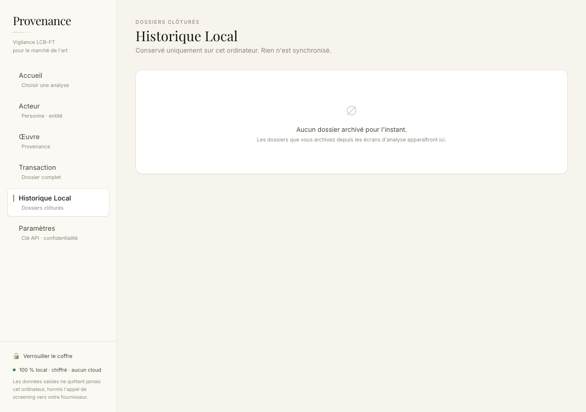
vigilanceDue marque le dossier « À revoir ».
Le bouton Re-screener relance le screening de l'acteur (et de ses UBO), ré-agrège une transaction,
journalise deux événements chaînés et signale toute aggravation par rapport à l'état précédent.
Les dossiers « œuvre » (sans acteur) n'y sont pas soumis.dossiersARevoir / countARevoir).12Paramètres & confidentialité
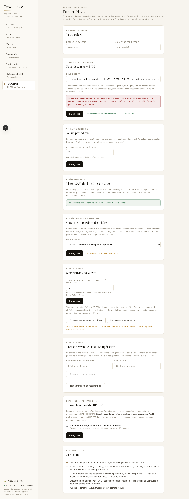
.vault), rappel « Zéro cloud ».La capture ci-dessus précède l'ajout des cartes « verrouillage auto », « phrase & clé de récupération » et « listes officielles » ; leur fonctionnement est décrit en partie 18.
13Le workflow complet, de bout en bout
Déverrouillage du coffre
Création (phrase ≥ 8 car.), migration des données en clair, ou déverrouillage. Rien n'est rendu avant.
Configuration
Galerie, fournisseur + clé de screening, intervalle de revue, fournisseur de marché optionnel, première sauvegarde chiffrée.
Choix du module & saisie minimale
Acteur, Œuvre ou Transaction. Approche par les risques : on ne demande que le nécessaire.
Analyse
Screening réel/démo + cascade UBO + assessment (
assessActor/assessArtwork/aggregateTransaction) → sous-scores, tier, pièces, facteurs.Traitement des faux positifs
Écarter/rétablir un match avec justification (recalcul + journalisation).
Collecte des pièces
Demande pré-remplie générée si le risque l'exige (mailto / copie /
.txt).Clôture (CompliancePanel)
Décision humaine ; si gel → projet DG Trésor ; si soupçon / niveau élevé → projet Tracfin ; piste d'audit vérifiée ; export PDF.
Archivage
Enregistrement local chiffré — bloqué tant qu'aucune décision n'est prise.
Vigilance continue
Badge « À revoir » après l'intervalle → re-screening, ré-agrégation, journalisation, alerte d'aggravation.
14Cadre juridique outillé
Les obligations ci-dessous ont été confrontées aux sources primaires (Légifrance / EUR-Lex / DG Trésor / GAFI). Cette vérification appuie la décision d'un juriste — elle ne constitue pas un avis juridique.
| # | Ce que fait l'outil | Référence | Statut |
|---|---|---|---|
| A1 | Assujettissement marchand/galerie/intermédiaire | L.561-2, 10° CMF | Correct |
| A2 | Seuil de vigilance 10 000 € (transaction ou série liée) | L.561-2, 10° (loi, pas un R.561-x) | À préciser |
| A3 | Vigilance graduée / PPE | PPE = L.561-10, 1° (pas L.561-10-1) | Corrigé (fond) |
| A4 | Pays tiers à haut risque | L.561-10, 3° + règl. (UE) 2016/1675 | À préciser |
| A5 | Conservation 5 ans | L.561-12 (fin de relation ou exécution) | À compléter |
| A6 | Déclaration de soupçon (ERMES) | L.561-15 ; arrêté 23/01/2025 | Correct |
| A7 | Gel des avoirs sans délai | L.562-4 (vs L.562-2 décision) | Correct |
| A8 | Indicateurs marché de l'art | Rapport GAFI, 27 fév. 2023 (typologies) | Correct |
BAREME_A_VALIDER.md.15Qualité : tests & intégration continue
219 tests unitaires
Vitest — scoring, dates, crypto & coffre v2 (Argon2id, clé de récupération, migration), passphrase, juridictions, marché, audit, monitoring, registres, OCR & cascade UBO, antécédents, suggestions, complétion, filigrane, horodatage (DER), appariement sanctions local, routes API…
8 parcours E2E
Playwright (Chromium) : coffre, récupération par clé + nouvelle phrase, phrase faible refusée, acteur, œuvre, transaction, jauge + bascule, saisie rapide foire — sur serveur de production en CI.
Verrou du barème
bareme.test.ts fige chaque
valeur chiffrée : toute dérive doc↔code casse la CI.
La CI GitHub Actions exécute à chaque push deux jobs parallèles : verify (lint + tests + build)
et e2e (Playwright + rapport HTML archivé).
16Limites connues & feuille de route
- OCR assisté, non probant seul — la reconnaissance dépend de la qualité de la photo ; les parseurs ne proposent que ce qu'ils détectent (aucun champ inventé) et l'humain valide toujours. C'est un assistant de saisie, pas une source de vérité.
- Interprétation des dates — comprend désormais « vers 1941 », « années 40 », « XIXᵉ/XVIIᵉ siècle » et le cadrage début/milieu/fin ; limite résiduelle : une date en toutes lettres inhabituelle ou non française reste non reconnue (sans faux positif).
- Screening sur le nom — faux positifs/négatifs d'homonymie inhérents. Le socle sanctions/gels est désormais possédé (listes officielles, local) ; PPE & adverse media restent un enrichissement payant, et un snapshot graine n'est pas probant tant que les listes complètes ne sont pas installées.
- Distribution des listes officielles — l'ingestion périodique + la distribution signée des snapshots (UE/ONU/OFAC/Gels FR) relèvent d'un service à héberger ; le format et le point de branchement client sont prêts.
- Snapshot GAFI manuel — actualisé à juin 2026, garde-fou de péremption + rappel CI mensuel, mais mise à jour à refaire à chaque plénière.
- Comparables de marché non archivés — l'humain reporte sa conclusion via l'indicateur prix.
- Barème non validé juridiquement — c'est le verrou bloquant pour une mise en prod défendable.
Évolutions envisagées : sauvegarde & distribution des listes en cloud zéro-knowledge (le client est prêt, le serveur reste à héberger), portage desktop Tauri, connecteurs de marché supplémentaires, données de langue OCR embarquées. livré Horodatage RFC 3161 (opt-in), coffre v2 avec clé de récupération, et screening local sur listes officielles.
17Ergonomie & sécurité — 13 nouvelles fonctionnalités
Cette vague vise à fluidifier la saisie du galeriste et à renforcer la force probante des dossiers, en restant strictement dans le cadre des contraintes transversales. Deux fonctionnalités demandées contredisaient, telles quelles, les principes fondateurs (auto-interrogation des registres avec score de similarité ; appel réseau systématique) : elles ont été implémentées dans leur version honnête, décrite ci-dessous.
| # | Fonctionnalité | Ce qu'elle fait — approche honnête |
|---|---|---|
| 1 | Attestation de revue registres | Constat humain consigné dans la piste d'audit (registres_attestes) une fois chaque registre renseigné. Aucune interrogation automatique, aucun « aucun match » présumé. |
| 2 | Auto-save continu | Brouillons chiffrés (AES-GCM / IndexedDB) avec anti-rebond ; le formulaire est restauré au montage. Aucune perte sur rafraîchissement. |
| 3 | PDF 1-clic | Aperçu du rapport dans une modale (iframe sur blob local) + téléchargement direct. Rien ne sort ; le blob est révoqué à la fermeture. |
| 4 | Bascule inter-modules | « Utiliser dans une transaction → » transporte l'acteur / l'œuvre en cours vers le module Transaction sans re-saisie (établi de travail en mémoire). |
| 5 | Alertes inline ciblées | Bandeaux non bloquants sur les points d'attention (pièce d'identité requise au-dessus du seuil, etc.), sans modale rigide. |
| 6 | Jauge de complétion | Barre de progression + prochaine étape, calée sur le niveau de vigilance ; ne compte que des éléments observables (jamais une pièce hors-outil supposée obtenue). |
| 7 | Autocomplétion locale | datalist alimenté par les valeurs déjà vues dans le coffre (artistes, nationalités, pays, techniques…) + pré-remplissage galerie / signataire. Aucune source externe. |
| 8 | Filigrane & signature | Filigrane indélébile incrusté dans les pixels de la pièce (canvas local) ; pavé de signature manuscrite joint au rapport PDF. 100 % sur l'appareil. |
| 9 | Antécédents inter-dossiers | Recherche floue (Levenshtein, sans accents, ordre des mots libre) d'un acteur / d'une œuvre déjà évalués ; propose le réimport, ne fusionne jamais d'office. |
| 10 | Horodatage RFC 3161 | Requête TimeStampReq (DER) vers une TSA qualifiée. Opt-in, off par défaut ; seule l'empreinte SHA-256 sort ; jeton conservé au coffre et joint au PDF. |
| 11 | Cascade UBO assistée | L'OCR d'un Kbis / de statuts propose des bénéficiaires (nom, part) ; l'humain contrôle chaque nœud (personne / entité) avant screening. Aucun détenteur inventé. |
| 12 | Relance mailto pré-remplie | Courrier neutre justifié LCB-FT (objet + corps), ouvert dans la messagerie du galeriste. L'outil n'envoie rien (déjà présent, confirmé). |
| 13 | Mode saisie rapide « foire » | Écran mobile / hors-ligne : identité sommaire, œuvre, montant, photo de la pièce → évaluation primaire locale. Dossier enregistré « à finaliser » (screening & décision au retour). |
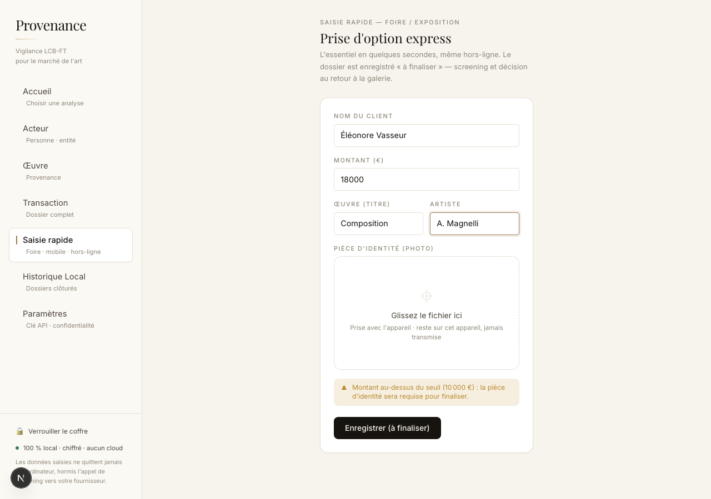
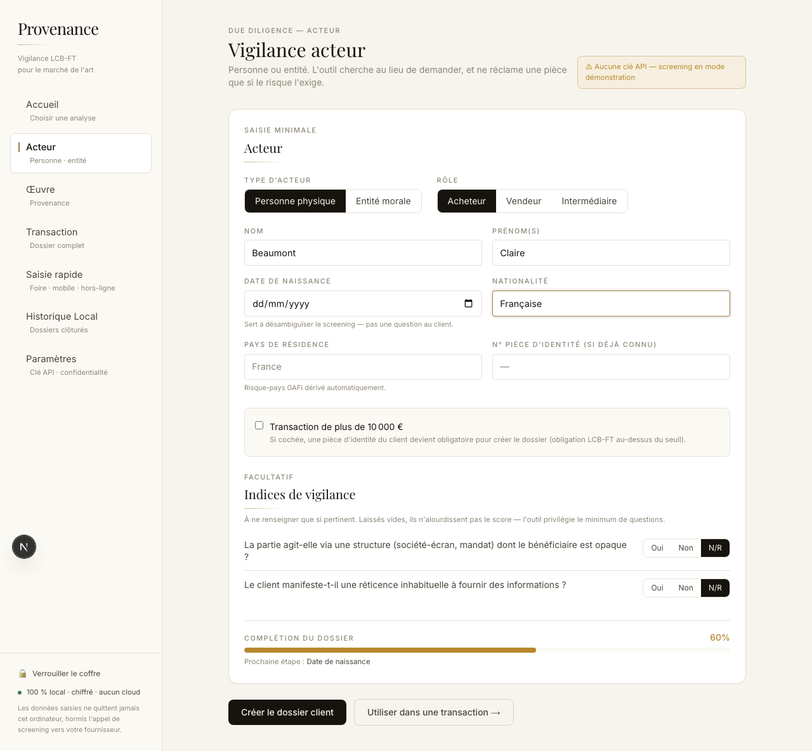
18Durcissement du coffre, couverture KYC & screening possédé
Troisième vague, en réponse à un audit des faiblesses : elle durcit la sécurité au repos, complète la couverture KYC des personnes et rend le screening sanctions possédé — toujours sans déroger aux invariants.
18.1 — Coffre v2 : chiffrement par enveloppe & clé de récupération
Le problème : une phrase forte augmente le risque d'oubli, or l'oubli faisait perdre 5 ans d'archives (obligation de conservation). La réponse est une clé de récupération découplée de la mémorisation.
Enveloppe
- Une clé de données aléatoire chiffre le contenu.
- Elle est emballée sous la phrase (Argon2id, memory-hard) et sous une clé de récupération (160 bits, base32 lisible).
- Migration v1 (PBKDF2) → v2 transparente au déverrouillage, avec remise d'une clé de récupération.
Parcours & verrous
- Phrase oubliée → la clé de récupération rouvre le coffre, puis nouvelle phrase.
- Changer de phrase re-emballe la clé sans re-chiffrer les dossiers ; régénérer la clé invalide l'ancienne.
- Verrouillage auto après inactivité (défaut 10 min) + jauge de force qui refuse les phrases faibles (min. 12 caractères, format « phrase de passe » encouragé).
18.2 — Couverture KYC des personnes
L'audit a montré que, côté œuvres, la checklist était quasi complète, mais que des attendus KYC manquaient côté personnes. Ajoutés (documentés, sans pondération arbitraire) :
- Objet & nature de la relation d'affaires (art. L. 561-5-1 CMF) et adresse complète.
- Mandant / bénéficiaire réel quand la partie agit pour un tiers (représentation, pouvoirs du mandataire).
- Origine des fonds / du patrimoine — structurée, elle satisfait la pièce due en vigilance renforcée.
- Deux indices facultatifs : représentation opaque et entourage / associé d'une PPE (RCA).
BAREME_A_VALIDER.md.18.3 — Screening « listes officielles » : possédé, pas loué
La dépendance à un fournisseur payant faisait retomber la fonction AML centrale en « démonstration non probante ». Or les listes qui font foi (UE, ONU, OFAC, Registre national des gels) sont gratuites.
- Nouveau fournisseur
listes_officielles: appariement local des noms (matcher flou), aucun réseau, aucune donnée ne sort. - Honnêteté : une graine incomplète ne renvoie jamais un « clear » probant (non-match = non probant) ; seul un snapshot officiel complet produit un « clear » opposable ; garde-fou de fraîcheur inclus.
- Hiérarchie assumée : posséder le socle sanctions/gels (local, gratuit), louer seulement l'enrichissement PPE/adverse media (réseau, optionnel).
Document de synthèse ; en cas de divergence, le code (
src/) et BAREME_A_VALIDER.md
font foi. Cet outil est une aide à la vigilance LCB-FT et n'engage pas la conformité du professionnel assujetti,
qui reste seul responsable de sa décision.